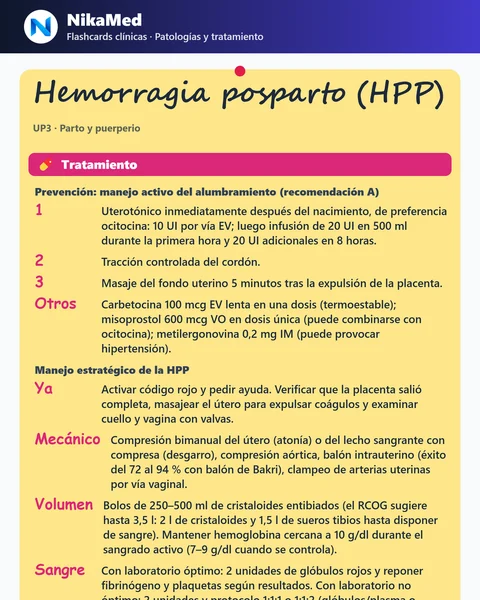

📚 Explorá los 240 temas clínicos publicados →
El Simulador FlashCard de NikaMed es una colección de tarjetas clínicas con tratamientos, diagnóstico, estudios, seguimiento y banderas rojas de las patologías más frecuentes, basadas en guías y consensos de sociedades científicas (FASGO, SOGIBA y otras). Es gratis para todas las cuentas: podés explorarlas, practicar y rendir el simulador sin pagar.
1Así se ven las tarjetas
Cada tarjeta es un «post-it» con la información ordenada en secciones desplegables, con los datos importantes (dosis, semanas, umbrales) resaltados. Estas imágenes son tarjetas reales de la plataforma, tal como se descargan para compartir o estudiar. Pasá el mouse por encima para ver más de cada una:



2Tres formas de usarlo
- 1ExplorarMosaico de tarjetas con buscador y filtros por unidad problema y por sociedad científica.
- 2PracticarEscribí tu respuesta en la tarjeta y verificá cuántos puntos importantes cubriste. También podés darla vuelta y recorrer el mazo con las flechas.
- 3SimuladorElegí unidad, parcial o final, qué repasar (tratamiento, diagnóstico, alarmas o el tema completo) y rendí un mazo que te va marcando qué dominás y qué te falta repasar.
3Qué incluye
- Tratamientos y temas clínicos de todas las áreas de la carrera: Ginecología y Obstetricia ya está disponible y el resto de las materias se va sumando, con fuente y año visibles en cada tarjeta.
- Sello de calidad: las tarjetas basadas en guías oficiales lo indican; las armadas desde apuntes avisan «verificar con guías actuales».
- Funciona sin conexión con el Modo Guardia, para estudiar en el transporte o en la guardia.
- Compartir: descargá la tarjeta como imagen en alta definición o enviala por WhatsApp.
- Progreso sincronizado entre tus dispositivos al iniciar sesión.
4Qué hay dentro de cada tarjeta
Todas siguen el mismo orden para que encuentres rápido lo que necesitás, y se abren en secciones desplegables:
5Cómo sacarles el máximo provecho
- 1Elegí una unidadEmpezá por la que tenés más cerca en la cursada, no por la más fácil.
- 2Escribí antes de mirarRespondé con tus palabras y recién después verificá: ahí está el aprendizaje.
- 3Mirá qué te faltóLos puntos ❌ son tus huecos: repasalos y volvé a intentar otro día.
- 4Repetí espaciadoVolvé a las que fallaste a los 2 o 3 días. Marcá «La sé» solo cuando salgan sin dudar.
6Preguntas frecuentes
¿Es realmente gratis?▾
¿Qué materias incluye?▾
¿Cómo verifica mi respuesta?▾
¿Puedo usarlas sin conexión?▾
¿Reemplazan a las guías de práctica clínica?▾
Probá el Simulador FlashCard gratis
Creá tu cuenta en NikaMed y empezá a practicar con tarjetas clínicas en un minuto.
Empezar gratis